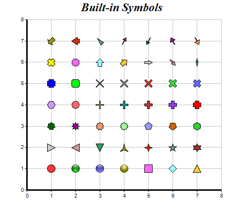

This example demonstrates the built-in symbols supported by ChartDirector.
ChartDirector 7.1 (C++ Edition)
Built-In Symbols

Source Code Listing
#include "chartdir.h"
int main(int argc, char *argv[])
{
// Some ChartDirector built-in symbols
int symbols[] = {Chart::CircleShape, Chart::GlassSphereShape, Chart::GlassSphere2Shape,
Chart::SolidSphereShape, Chart::SquareShape, Chart::DiamondShape, Chart::TriangleShape,
Chart::RightTriangleShape, Chart::LeftTriangleShape, Chart::InvertedTriangleShape,
Chart::StarShape(3), Chart::StarShape(4), Chart::StarShape(5), Chart::StarShape(6),
Chart::StarShape(7), Chart::StarShape(8), Chart::StarShape(9), Chart::StarShape(10),
Chart::PolygonShape(5), Chart::Polygon2Shape(5), Chart::PolygonShape(6),
Chart::Polygon2Shape(6), Chart::Polygon2Shape(7), Chart::CrossShape(0.1), Chart::CrossShape(
0.2), Chart::CrossShape(0.3), Chart::CrossShape(0.4), Chart::CrossShape(0.5),
Chart::CrossShape(0.6), Chart::CrossShape(0.7), Chart::Cross2Shape(0.1), Chart::Cross2Shape(
0.2), Chart::Cross2Shape(0.3), Chart::Cross2Shape(0.4), Chart::Cross2Shape(0.5),
Chart::Cross2Shape(0.6), Chart::Cross2Shape(0.7), Chart::ArrowShape(), Chart::ArrowShape(45
), Chart::ArrowShape(90, 0.5), Chart::ArrowShape(135, 0.5, 0.2), Chart::ArrowShape(180, 0.3,
0.2, 0.3), Chart::ArrowShape(225, 1, 0.5, 0.7), Chart::ArrowShape(270, 1, 0.5, 0.25),
Chart::ArrowShape(315, 0.5, 0.5, 0), Chart::ArrowShape(30, 0.5, 0.1, 0.6),
Chart::ArrowShape(210, 0.5, 0.1, 0.6), Chart::ArrowShape(330, 0.7, 0.1), Chart::ArrowShape(
150, 0.7, 0.1)};
const int symbols_size = (int)(sizeof(symbols)/sizeof(*symbols));
// Create a XYChart object of size 500 x 450 pixels
XYChart* c = new XYChart(500, 450);
// Set the plotarea at (55, 40) and of size 400 x 350 pixels, with a light grey border
// (0xc0c0c0). Turn on both horizontal and vertical grid lines with light grey color (0xc0c0c0)
c->setPlotArea(55, 40, 400, 350, -1, -1, 0xc0c0c0, 0xc0c0c0, -1);
// Add a title to the chart using 18pt Times Bold Itatic font.
c->addTitle("Built-in Symbols", "Times New Roman Bold Italic", 18);
// Set the axes line width to 3 pixels
c->xAxis()->setWidth(3);
c->yAxis()->setWidth(3);
// Ensure the ticks are at least 1 unit part (integer ticks)
c->xAxis()->setMinTickInc(1);
c->yAxis()->setMinTickInc(1);
// Add each symbol as a separate scatter layer.
for(int i = 0; i < symbols_size; ++i) {
double xCoor[] = {i % 7 + 1.0};
double yCoor[] = {i / 7 + 1.0};
c->addScatterLayer(DoubleArray(xCoor, 1), DoubleArray(yCoor, 1), "", symbols[i], 17);
}
// Output the chart
c->makeChart("builtinsymbols.png");
//free up resources
delete c;
return 0;
}